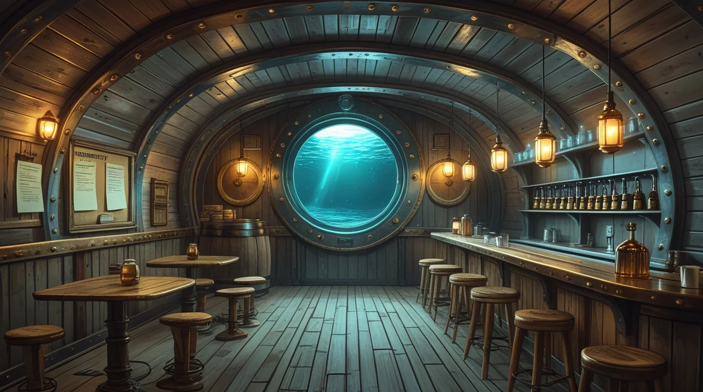

↓ 3.000 m Início
Rede Náutilus A comunidade de Atlântida
Conectando habitantes, compartilhando histórias e mantendo Atlântida unida, uma mensagem de cada vez. Olhe em volta: seus óculos marcam cada canto da taverna.
Entrar na comunidade →